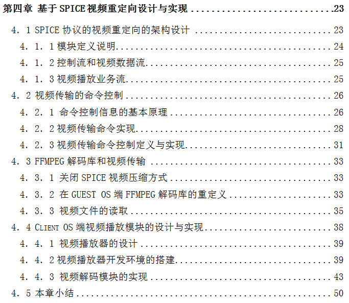
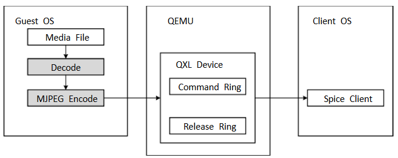
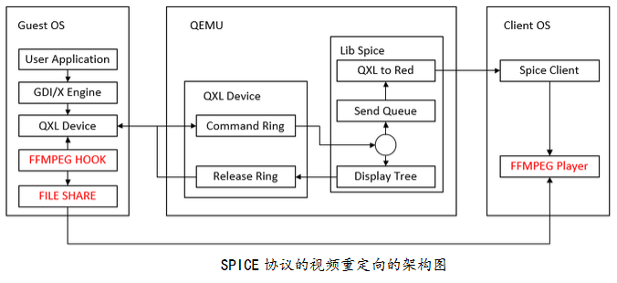
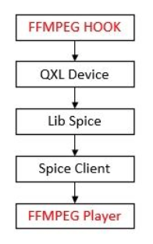
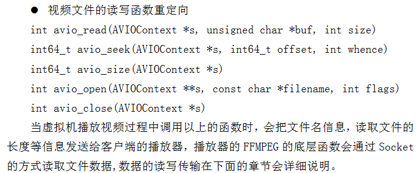
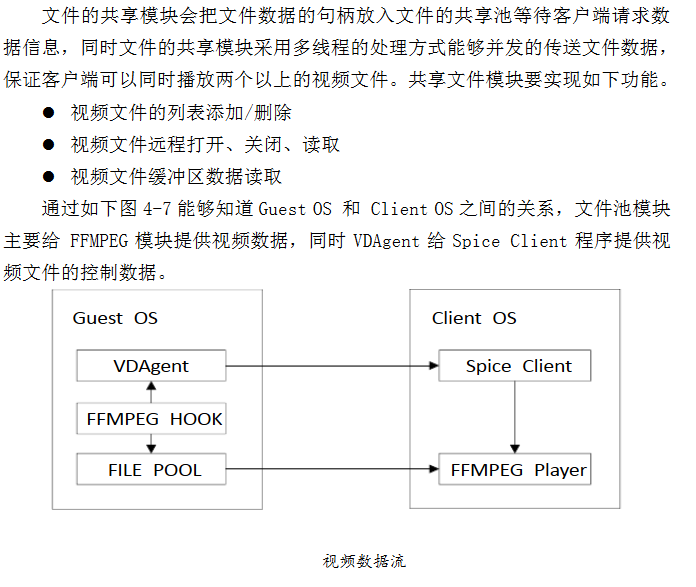

目录

算法
Quic、GLZ/LZ为无损压缩图片算法，属于SPICE专有算法；JPEG是有损压缩算法。
MJPEG（Motion JPEG）视频压缩算法，以25帧/秒的速度使用JPEG算法压缩视频，是spice采用的算法。
播放视频时，服务端解压视频，解压后通过Guest OS的设备驱动传递给主机，主机使用MJPEG传送给客户端。

视频处理流程
视频处理流程
重定向架构

控制流和视频数据流
在视频的传送播放过程中主要产生两个数据流：
- 第一个是视频信息控制流：主要是由 FFMPEG HOOK 模块截获视频播放的相关数据，通过 SPICE 命令通道传给 Client OS 端，最终给 FFMPEG Player 模块。
- 第二个是视频文件的传送：在 FFMPEG HOOK 得到播放的文件数据后，视频的控制信息会传送给 Client0S , FFMPEG Player 模块会通过 FILE SHARE 模块请求文件数据。
控制信息传送依赖spice的传送方式virtio-serial（也叫isa-serial）；qemu提供了串口设备的模拟及数据交换通道。表现形式是windows中的串口设备和linux socket文件；串口设备存在于Guest OS中，linux socket存在于Host OS中。

spice控制信息传递
spice控制信息传递
视频传输命令控制定义与实现



FFMPEG解码库和视频传输
关闭spice视频压缩方式
在视频重定向的模式下，spice协议的启动参数分别设定如下： mage-compression = auto_glz jpeg-wan-compression = never zlib-glz-wan-compression = never streaming-video = off
在GUEST OS端FFMPEG解码库的重定义


读取视频文件

视频解码模块

ffplay.c
vdagent-win-0.8.0vdagent
spice-gtkclient
spice-nsisguest
spiceserver
需要修改的代码：
- vdagent-win-0.8.0
- vd_agent.h
- 添加命令枚举类
- 定义消息的结构体
- vdagent.cpp
- dispatch_message(VDAgentMessage* msg, uint32_t port)
- 处理命令，将数据发送给客户端
- vd_agent.h